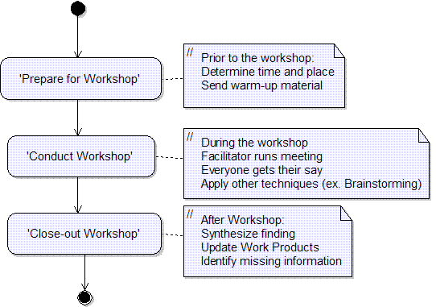
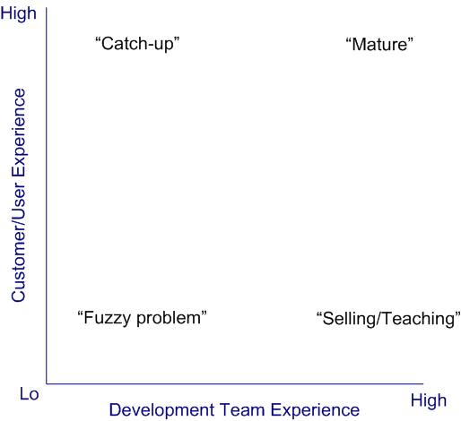

| Guideline: Requirements Gathering Techniques |
 |
|
| Related Elements |
|---|
Sources of RequirementsGood requirements start with good sources. Finding those quality sources is an important task and, fortunately, one that takes few resources. Examples of sources of requirements include:
Requirements Gathering TechniquesAfter you have identified these sources, there are a number of techniques that may be used to gather requirements. The following will describe the various techniques, followed by a brief discussion of when to use each technique. To get the requirements down on paper, you can to do one or more of the following:
The best idea is to get the requirements down quickly and then to encourage the users to correct and improve them. Put in those corrections, and repeat the cycle. Do it now, keep it small, and correct it at once. Start off with the best structure you can devise, but expect to keep on correcting it throughout the process. Success tips: Do it now, keep it small, and correct it immediately. Conduct a brainstorming sessionBrainstorming is a short group session where everyone is allowed to say whatever they feel is important to the topic of discussion. After that, a facilitator leads the group in organizing and prioritizing the results. The following basic rules for brainstorming ensures better results:
Interview usersFace-to-face contact with users through individual interviewing is the primary source of requirements and an important way you gather and validate their requirements. Remember that it is not the only possible technique, and that you can conduct interviews many different ways. Develop a repertoire of styles to fit different situations. Unless you use the system yourself, you will need to make an effort to understand and experience the user's problem to describe it clearly and correctly. Send QuestionnairesIf face-to-face meetings are possible, they are always preferable, because they provide a better means of uncovering the problem behind the problem. Sometimes, though, face-to-face meetings with stakeholders are not feasible (when developing products for the consumer market, for example). In those situations, consider using questionnaires. Send a set of questions, possibly with multiple choice responses, to the relevant stakeholders, and ask them to complete it and return it to you. Success tips: Keep it short and given them a deadline. This technique has the advantage of providing a lot of information for statistical analysis. However, the questions must be well designed to be clear and to avoid so-called "leading questions", which bias the responses. Work in the target environmentExperience the work of the users for yourself. Working with users helps you understand problems that have resisted previous solutions. Familiar systems developed in this way inevitably include tools for programmers, such as interactive editors and compilers, as the developers naturally have both the expertise in the subject area, and the desire to solve their own problems. It would be good to see the same dedication devoted to solving problems in other areas too. Where the work cannot easily be experienced in this way, it may still be possible to do a bit more than just sit quietly and observe. Users can give you a commentary on what they are doing, what the problems are, and what they would like to have to make the work easier. Study analogous systemsThe starting point for many projects is often a similar or an existing system. Sometimes, comparable products and systems contain working versions of good ideas for solving user problems. You can save the time lost in reinventing the wheel by looking at systems already on the market, whether they are systems installed at the user's site or products made by rival organizations. Even if they are trying to solve slightly different problems, they often provide valuable clues as to what you need to do. Listen when a customer asks why a product couldn't do something that the customer wants, and keep a list of these suggestions. Later, use it to start discussions with other users. You should be able to obtain some requirements directly this way. If not, capture and store suggestions for future use. You can describe to users selected features of other products. Explain that the system is designed for another purpose but contains an interesting feature, and you wonder it or something similar would help them. Sometimes these systems are described in documents, such as a contract from another organization or a report written for management. Often, these documents were never intended as formal requirements, and were written merely to communicate a stream-of-consciousness idea. Define a process of going from disorganized to organized information. Such a process might involve the following activities:
Examine suggestions and problem reportsRequirements can come from change suggestions and user problems. A direct road to finding requirements is to look at suggestions and problems as first described. Most organizations have a form for reporting system problems or software defects. You can ask to look through the reports (and there will probably be many). Sort them into groups so you can identify the key areas that are troubling users. Ask users some questions about these areas to clarify the users' actual needs. Talk to support teamsMost large sales organizations have a help desk that keeps a log of problems and fixes, and support engineers who do the fixing. Many organizations have similar facilities to support their own operations. Talking to the help desk staff and the support engineers may give you good leads into the requirements, and save you time. Also talk to the training team and installation teams about what users find to be difficult. Study improvements made by usersThis is an excellent source of requirements. Users of a standard company spreadsheet may have added a few fields, or related different sheets together, or drawn a graph, that exactly meets their individual needs. You need only ask: Why did you add that? Their answers help you get to the heart of the actual requirement. This applies also to hardware and non-computer devices. For example, a lathe operator may have manufactured a special clamp, or an arm that prevents movement of the tool beyond a certain point. Any such modification points to something wrong with the existing product, which makes it a valid requirement for the new version. Look at unintended usesPeople often use things for purposes for which they were not designed. This is a good way to get new ideas and to think of innovations. For example, an observant product manager noticed that an engineer was staying in the office late to use an advanced computer-aided design system to design a new kitchen layout for his home. Inexpensive commercial products are now widely available for home use. Conduct workshopsWorkshops can rapidly pull together a good set of requirements. In two to five days, you can create a set of requirements, and then review and improve them. If everyone in a workshop tries to estimate the cost and value of each requirement, the document becomes much more useful and cost-effective. Workshops are quicker and better at discovering requirements than other techniques, such as sending questionnaires. You are bringing the right collection of people together, and getting them to correct and improve on their requirements document. A workshop is inherently expensive because of the number of people involved, but it saves a large amount of time. If you can define the product right the first time and cut three months off the requirements gathering, the savings could be enormous. The workshop has to be thoroughly organized to take advantage of people's time. Choose a quiet location for the workshop so that people are not disturbed by day-to-day business. Mobile phones should be discouraged; arrange to take messages externally. Take advantage of informal interactions by choosing a site so that people don't go home at night or go out separately. The example in Figure 1 shows the logic of a requirements workshop. Note that the workshop provides the environment in which to apply other requirements-gathering techniques such as brainstorming.  Figure 1: Conducting Workshops Demonstrate prototypes to stakeholdersPrototypes allow us to immediately see some aspects of the system. Showing users a simple prototype can provoke them into giving good requirements information or changing their mind about existing requirements. The techniques described here help you gather ideas for requirements. Prototypes and models are an excellent way of presenting ideas to users. They can illustrate how an approach might work, or give users a glimpse of what they might be able to do. More requirements are likely to emerge when users see what you are suggesting. A presentation can use a sequence of slides, storyboard, an artist's impression, or even an animation to give users a vision of the possibilities. When prototyping software, make a mock-up of the user interface screens, emphasizing that there is no code and that the system has not been designed or even specified yet (fair warning: there are dangers here for the unwary). This prototyping aims to get users to express (missing) requirements. You are not trying to sell users an idea or product, you are finding out what they actually want. Seeing a prototype, which invariably is wrong in some ways and right in others, is a powerful stimulus to users to start saying what they want. They may point out plenty of problems with the prototype! This is excellent, because each problem leads to a new requirement. Which Technique to Apply?Which technique to apply depends on a number of factors, such as:
If the stakeholders are not co-located or readily available, for example in the case of a product being developed for mass market, techniques such as brainstorming, interviews and workshops that require face-to-face contact with the stakeholders may be difficult or impossible. If the stakeholders are available for face-to-face meetings, this is a much better situation and almost all of the techniques described, or combination of them, may be applied. In this case, the domain and development experience of both the stakeholders and the development team are critical factors in selecting the appropriate technique. Figure 2, adapted from [HIC03], provides a framework for determining the appropriate techniques. It defines four main categories of customer or user experience and development team experience: "Fuzzy problem", "Selling/Teaching", "Catch up", and "Mature".  Figure 2: Selection of Techniques There is no "right answer", but these guidelines may help you decide which method to use:
|
This program and the accompanying materials are made available under the |